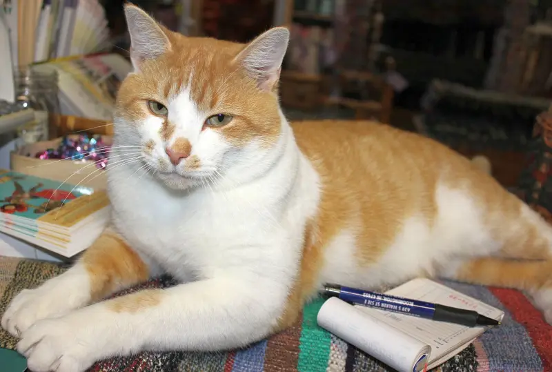

Homestead Weaving Studio
Fine hand-woven items and quality supplies since 1968
Weaving with an environmental conscience, making rag rugs that are soft, wonderful and woven from recycled or upcycled material.

Recycled rag rugs
Chris Gustin is a fiber artist who takes recycling seriously. Most of the material in our rugs is reclaimed: new fabric that is the byproduct of another industry, from hosiery mills, bedding factories, curtain manufacturers, and clothing and upholstery mills.
To those industries, the material is waste. To us, it is the heart of a recycled rug. We turn over a ton of it into art every year.
Our handwoven rugs are certified as Indiana Artisan quality work. Every rug is one of a kind, and the selection changes often.

Detail of a rag rug.


Shawls, wraps, ruanas and scarves
Möbius Shawl in Bamboo ribbon
There is a rainbow of new Möbius shawls and scarves, traditional rayon chenille scarves, and other clothing, all woven by hand in our studio. One-size garments fit almost everyone thanks to their loose fit.


Come weave with us
Classes and day instruction are given on the rug looms. They run throughout the year as weather permits, so ask if you're interested. We keep several looms warped for make-and-take: you leave with something you made.
A day-weaving rug class
- We pick the colors of fabric for the rug you want to make.
- I show you how to plan a rug, and we pull the pieces and lay out the design.
- We put the material on shuttles, with a short how-to on weaving it.
- Once you get the hang of it, you weave. I check on you every 10 minutes or so and advance the warp when you need it.
- I put in the header thread, cut the rug off the loom and tie the knots for you.
What's on the looms this month, and day-weaving fees
“She was a very patient and encouraging teacher, and even patched up my goofs so they don't show. I absolutely enjoyed my half day under her guidance.”Sharon P., Ohio
Shop the studio
We can ship most of our products with the shopping carts on our pages. If something you want doesn't have a PayPal button, email us.
Weavings
For weavers and spinners

Visiting the studio
The studio includes a loom room, with six looms set up for towels, rugs, and fabric. We are open 11 to 5 most days, by appointment.
Homestead Weaving Studio LLC
6285 S Hamilton Creek Road
Columbus, IN 47201
We are in the middle of “Nowhere,” so please call to confirm that we will be here before you make the trip. All times of year are by appointment and at the mercy of the weather.
Call (812) 988-8622Or email chris@homesteadweaver.com. Studio news is on our Facebook page.
